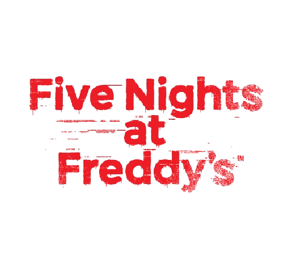

Sobreviva à fome… se conseguir!
Bem-vindo à Freddy's Pizza, a pizzaria mais assustadoramente deliciosa da cidade. Aqui, cada pizza é preparada com ingredientes fresquinhos e muito carinho, e nossos animatrônicos estão sempre de olho no seu pedido. Escolha sua pizza favorita, faça seu pedido e prepare-se para uma noite inesquecível. Só não se esqueça: nossa casa fecha às 6h, e depois disso… bem, a gente não garante o que pode acontecer.
Conheça nosso cardápioHelpy: Oi! Pergunte sobre horário, cardápio, entrega ou contato.